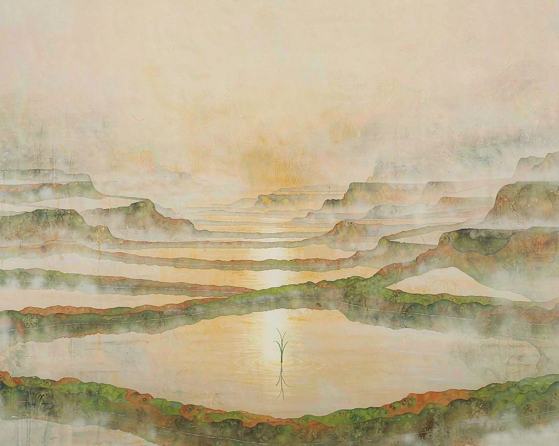
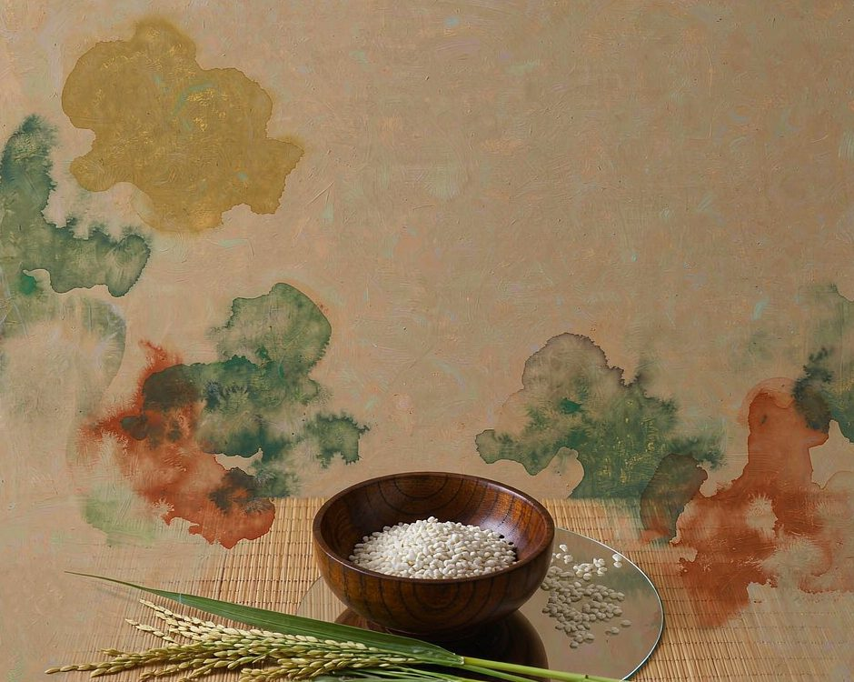
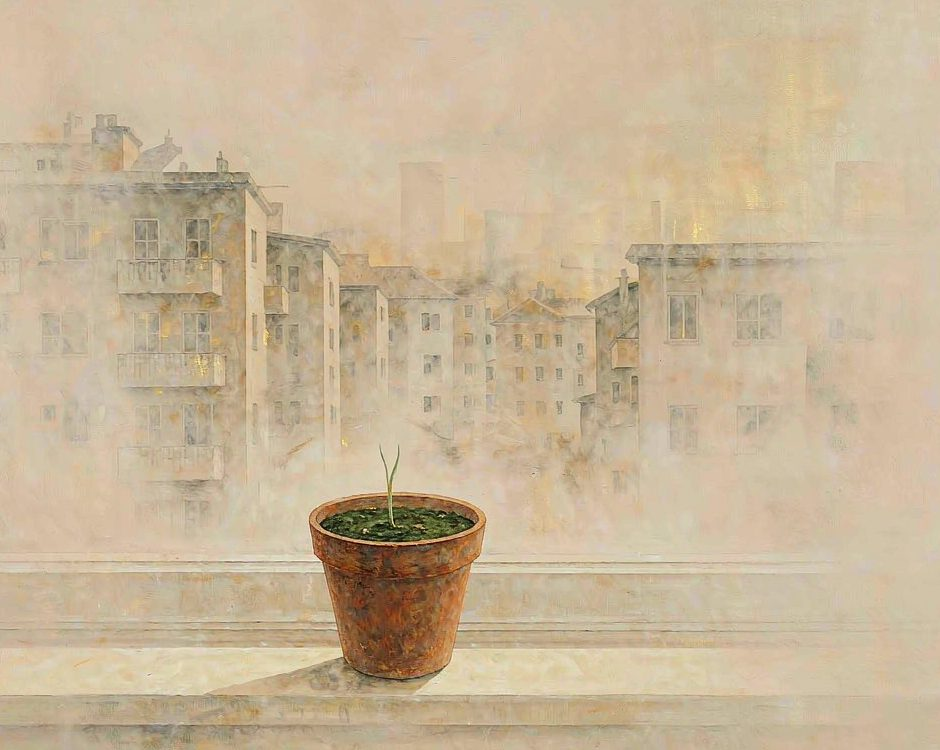

云南元阳，清晨的水田先亮起来。太阳还没翻过山头，一层一层的田面已经浮着薄薄的金。田埂上有人蹲着，看的不是收成，是水往哪一格流。秧苗刚过膝，稻根松开泥，鱼在秧苗之间穿行，鸭子踩着田泥往前走，翅膀一张，水花溅到鞋面上。这一亩地住着三样东西，也住着一整套还没说出口的秩序。
擡头看，山顶还有一层森林。山上的树把雨水留成雾，雾顺着坡往下走，走进村寨，走过竹楼，一路流进田里。再往下，田水汇进河谷，河谷底下的雾又升回山腰。这样转一圈，水在山上山下打了个来回，一亩田才有一年四季不断的水。所以哈尼人建村寨的位置从来不在水头，也不在水尾，要卡在中间那一段。要的是水刚刚过得去，又还留得住。

一亩田，三样活物，一份默契
这套办法没有写在纸上，却比纸上的规矩更准。秧苗插下去要一个月才够稳，稳了之后才放鱼，鱼吃虫和草秧，不啃稻根。鸭子下田要等稻子抽穗，太早会踩坏穗，太晚就没有虫吃。三样东西挤在同一亩水里，各占一层，各吃各的，浪费的部分刚好被旁边那一样接走。
田里还养着别的东西。稻根周围的真菌和根瘤菌在水里工作，把养分送到该去的地方。田埂上的草根把土留住，水才不会跑光。鱼排出的粪，鸭踩出的浅坑，让水在稻根旁边多停一会儿。一亩田是一个循环，不是一条生产线。生产线要每一段都跑到底，循环要的是整张田一直不断。
这套循环最厉害的地方，是它自己会省。鸭子吃掉的虫，是鱼本来吃不到的那部分。鱼翻动的泥，把水底翻上来一层，稻根够得着。田里长出的杂草被鸭踩进泥里，沤过之后又是肥。每一层都在替下一层干活，谁也不白干。这套办法在这片山上转了上千年，能转这么久，是因为它本来就省。
顺序其实是反的
一亩田养三代人，这句话常被这样听。田在前，人在后，土地供养了祖辈、父辈、现在这一辈。
真实的情况常常反过来。三代人是同时坐在那亩水边的。哪一格先放水，哪一格晚一天插秧，鱼和鸭子什么时候进田，收割后的稻草怎么处理才不压着下一季的苗。这些判断没有写在合约里，是一代传一代。谁家的经验足，谁在插秧那天多看两眼水色，那两眼的分量，往往比买回来的肥袋上印的说明更管用。
传下来的是一种对土地的判断力，不是一本技术手册。它不在纸上，就只能一段一段交给人，交一代人要一代人的耐心。一个孩子五岁分到两分地，先学放水，学到十几岁才敢自己下种，学到三十岁才敢说今年水够不够。这套本事要用二十年才长成一个成年人的手。

这二十年里，年轻人一批一批往城里走。田还在，经验还在，人在变少。留下来的多半是五十岁往上的。村里都知道这样下去不行，可谁也说不清田要怎么等回年轻人。有些老人把田租给外地人耕，自己去城里帮孙子带孩子，那片梯田就还是那片梯田，水照样转，只是看水的人换了。
老人最常念的一句话是这块田从前养过多少人。哪个寨子哪一年迁走过，迁走那年田里还照样收过一季，产量记在帐上，人名也记在帐上。帐本已经很旧，字迹淡了，田还在这里。土地记东西的方式很笨，它不写进碑里，就写在水里。一个人只要还在这一年从这块田里吃过饭，就还在它的帐上。
土地从来没有欠过谁，是人一直在学怎么不欠它。
想种回去，不必先有田
不是每个人手里都有一亩水田，那套逻辑可以在别的地方用上一小部分。
先学着看一件东西的来处。买一把青菜，看叶子的颜色和根部的泥，问一句它走了多远才到这张桌上。泥捏一下，松开还是黏住，闻得到什么味。这些动作花不了一分钟，一分钟之后那把菜的重量就不再是标价牌上的数字。也看一眼包装背面那行小字，产地常常就写在那里，只是很少有人真的读完。
再把手弄脏一点。阳台角落放两盆葱，想吃的时候掐一根，掐完它会再长。窗台种一盆薄荷，剪切来泡水，剪的时候有一点疼，植物不会安慰人，但它会继续长。土干了要浇，浇多了会烂，烂了要换盆。这些麻烦事一多，就没法全买现成的了。

养一株活的东西会顺带养出别的东西。日子会多出一个小小的节拍，今天该浇水，明天该掐叶。日子一旦有了节拍，慌的感觉就退了一点。
土的变化是最慢也最实在的那部分。原先板结的土，浇过几次水之后会松，土松了根就扎得深，根深了叶子就厚。看不见的过程都在发生，只是慢到要一个月才显形。这一个月里，能做的事就是接着浇。
然后把这件事说给一个人听。说出去的时候不带炫耀，是一条线索。听到的人或许也去问一句他那把菜的来处。一个人问，三个人问，一条线就接上了。
慢下来，是一种校准
元阳的水田不赶时间。秧苗长得慢，水就慢慢流，一季稻从插秧到收割要看天。农人待在田边的时间很多，那不是浪费，那是观察。一块田观察久了，会知道哪一格缺水、哪一格土松、哪一天该把鸭子赶出去、哪一阵风过后水会浑。
这种慢，是把速度调回土地能承受的范围。城市里的快是另一种范围，快的代价是看不见水往哪里流。快递到门口的时候，一顿饭里发生过什么，没人知道。
稻子在田里长够那几个月的日头，米粒才会饱满。鸭子在田里跑够那些天，脂肪才厚。人和土地之间没有捷径，只能等。等不是消极，是在让事情按它该有的时间发生。
三样东西共一亩。稻子把身子举高，鱼在下面游，鸭子在上面踩。三层各有一份活，谁也不去抢谁的。看着是一块田，其实是一桌已经摆好的饭，有人在替土地记着，什么时候该放水，什么时候该收手。
这一亩田的收成，够不够一家人一起吃，得看年景。可它从来不只是产粮食的地方。它是三个人手上共有的活，是他们之间不必说出口的约定，是谁都不能先走的理由。
一亩田能养三代人，靠的从来不只是水，是几代人都愿意回来。
（小练习。找一把带根的青菜，捏一下根部的泥，读一读包装背面的产地，问问它走了多远才到手上。）
你最近一次，是什么时候好好吃完了一顿饭。